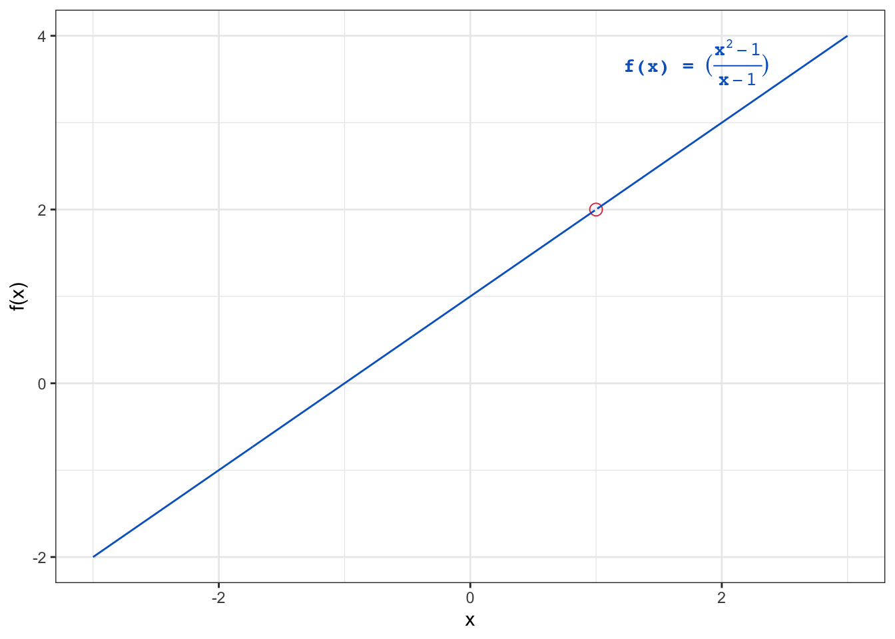
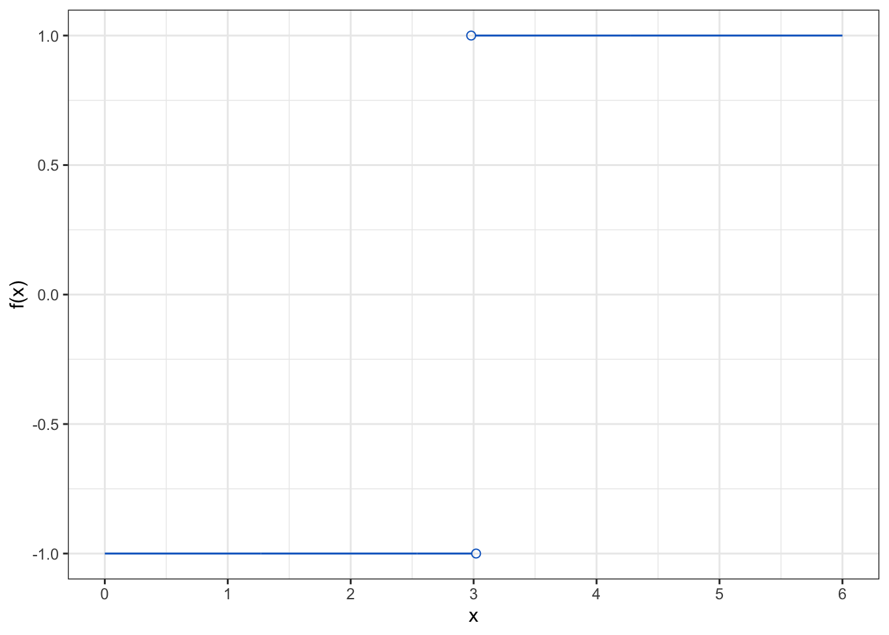

Limits
Review basic concepts of limits
1 The concept of limits
Let \(f(x)\) be a function of \(x\), where \(\displaystyle f(x) =\frac{x^2 - 1}{x - 1}\).
At \(x=2\), \(\displaystyle f(x) = f(2) = \frac{2^2-1}{2-1} = 3\).
However, if we substitute \(x=1\) into the function, we get \(\displaystyle f(1) = \frac{1^2-1}{1-1} = \frac{0}{0}\), which is undefined.
We can still examine how the function \(f(x)\) behaves as the value of \(x\) becomes closer and closer to \(1\) (i.e., as \(x\) approaches \(1\)).
This is referred to as the
limitof the function \(f(x)\) as \(x\) approaches \(1\), which is denoted by \(\displaystyle \lim_{x \to 1} f(x)\).This can be calculated by plugging in values of \(x\) that are very close to \(1\) into the function \(f(x)\).
The values of \(x\) approaching \(1\) can be from the left side (i.e., \(x \lt 1\)) or from the right side (i.e., \(x \gt 1\)).
We can construct a table of values of \(f(x)\) as \(x\) approaches \(1\) from both sides as follows:
| \(x\) (left side) | \(f(x\)) | \(x\) (right side) | \(f(x\)) |
|---|---|---|---|
| \(0.90\) | \(1.90\) | \(1.1\) | \(2.1\) |
| \(0.99\) | \(1.99\) | \(1.01\) | \(2.01\) |
| \(0.999\) | \(1.999\) | \(1.001\) | \(2.001\) |
It is clear from the table that as \(x\) approaches \(1\) from both sides, the value of \(f(x)\) approaches \(2\).
This can be denoted by \(\displaystyle \lim_{x \to 1} \frac{x^2-1}{x-1} = 2\).
This function is graphically presented in Figure 1.
- The hollow point on the graph represents the fact that the function is undefined at \(x=1\).
Definition of a limit
Let \(f(x)\) be a function of \(x\) undefined at \(a\). If all values of the function \(f(x)\) approach a real number \(L\) as the values of \(x(\ne a)\) approach the value \(a\), it said that the limit of \(f(x)\) as \(x\) approaches \(a\) is \(L\), denoted by \[
\displaystyle \lim_{x \to a} f(x) = L
\]
For a limit to exist, the values of the function \(f(x)\) must approach the same value from both sides as \(x\) approaches the value \(a\). This is referred to as
two-sided limit: \(\displaystyle \lim_{x \to a^-} f(x) = L\) and \(\displaystyle \lim_{x \to a^+} f(x) = L\), where the superscripts \(-\) and \(+\) denote the left and right sides, respectively.If the above condition is not satisfied, the limit does not exist (DNE).
Example:
Let \(g(x) =\displaystyle \frac{|x-3|}{x-3}\).
The limit of \(g(x)\) as \(x\) approaches \(3\) from the left side is \(\displaystyle \lim_{x \to 3^-} \frac{|x-3|}{x-3} = -1\).
The limit of \(g(x)\) as \(x\) approaches \(3\) from the right side is \(\displaystyle \lim_{x \to 3^+} \frac{|x-3|}{x-3} = 1\).
So, the limit at \(x=3\) does not exist.
This function is graphically presented in Figure 2.

2 Some basic rules of limits
\(\displaystyle \lim_{x \to a} x = a\), where \(a\) is a real number.
\(\displaystyle \lim_{x \to a} c = c\), where \(c\) is a constant.
\(\displaystyle \lim_{x \to a} \left( f(x) \pm g(x) \right) = \displaystyle \lim_{x \to a} f(x) \pm \displaystyle \lim_{x \to a} g(x)\).
\(\displaystyle \lim_{x \to a} (f(x) \times g(x)) = \displaystyle \lim_{x \to a} f(x) \times \displaystyle \lim_{x \to a} g(x)\).
\(\displaystyle \lim_{x \to a} cf(x) = c \cdot \displaystyle \lim_{x \to a} f(x)\).
\(\displaystyle \lim_{x \to a} \frac{f(x)}{g(x)} = \frac{\displaystyle \lim_{x \to a} f(x)}{\displaystyle \lim_{x \to a} g(x)}\), provided \(\displaystyle \lim_{x \to a} g(x) \ne 0\).
\(\displaystyle \lim_{x \to a} \left( f(x) \right)^n = \left( \displaystyle \lim_{x \to a} f(x) \right)^n\).
3 Ways to find limits
Direct substitution method:
- This method involves substituting the value of \(x\) into the function and calculating the limit.
Factoring method:
- This method involves factoring and canceling out common factors.
Evaluate the limit \(\displaystyle \lim_{x \to 2} \frac{x^3 - 3}{2x - 5}\)
\[ \displaystyle \lim_{x \to 2} \frac{x^3 - 3}{2x - 5} = \frac{2^3 - 3}{2(2) - 5} = \frac{8 - 3}{4 - 5} = \frac{5}{-1} = -5 \]
Evaluate the limit \(\displaystyle \lim_{x \to 3} \frac{x^2 - 9}{x - 3}\)
If we substitute \(x=3\) into the function, we get \(\displaystyle \frac{3^2 - 9}{3 - 3} = \frac{0}{0}\), which is undefined.
Therefore, we can try to factor the function to cancel out the problematic term in the denominator as follows:
\[ \displaystyle \lim_{x \to 3} \frac{x^2 - 9}{x - 3} = \displaystyle \lim_{x \to 3} \frac{\cancel{(x - 3)} (x+3)}{\cancel{(x - 3)}} = \displaystyle \lim_{x \to 3} (x + 3) = 3 + 3 = 6 \]
Evaluate the limit \(\displaystyle \lim_{x \to 5} \frac{x^2 -3x -10}{x^2-5x}\)
The answer is \(\displaystyle \frac{a}{b}\), \(a=\) and \(b=\)
- Try factoring the function.
4 Limits at infinity
The limit of a function as \(x\) approaches infinity or negative infinity is referred to as the
limit at infinityand is denoted by \(\displaystyle \lim_{x \to \infty} f(x)\) or \(\displaystyle \lim_{x \to -\infty} f(x)\).These limits describe how the function behaves as \(x\) becomes very large or very small (i.e., \(x\) increases or decreases without bound), respectively.
The limit at infinity can be calculated by plugging in very large or very small values of \(x\) into the function.
Example:
Let \(\displaystyle f(x) = \frac{1}{x}\).
\(\displaystyle \lim_{x \to \infty} \frac{1}{x} = 0\):
As the value of \(x\) becomes very large, the value of the function becomes very small.
As the value of \(x\) approaches infinity, the value of the function approaches zero.
\(\displaystyle \lim_{x \to -\infty} \frac{1}{x} = 0\).
- As the value of \(x\) becomes very small (\(x\) ignoring the negative sign becomes very large), the value of the function becomes very small.
- As the value of \(x\) approaches negative infinity, the value of the function approaches zero.
Example:
Let \(f(x) =x^2 -3x\).
To evaluate \(\displaystyle \lim_{x \to \infty} (x^2 -3x)\), we cannot simply substitute \(x = \infty\) into the function because the result will be \(\infty - \infty\), which is undefined.
A workaround is to factor out the largest power of \(x\) in the function as follows:
\(\displaystyle \lim_{x \to \infty} (x^2 -3x) = \displaystyle \lim_{x \to \infty} x^2(1 - \frac{3}{x}) = \displaystyle \lim_{x \to \infty}x^2 \times \displaystyle \lim_{x \to \infty} (1 - \frac{3}{x})\).
The first term, \(\displaystyle \lim_{x \to \infty} x^2 = \infty\) (as \(x\) approaches infinity, the value of \(x^2\) also approaches infinity).
The second term, \(\displaystyle \lim_{x \to \infty} (1 - \frac{3}{x}) = 1 - \displaystyle \lim_{x \to \infty} \frac{3}{x} = 1 - 0 = 1\).
Therefore, \(\displaystyle \lim_{x \to \infty} (x^2 -3x) = \infty \times 1 = \infty\).
The above example could have been solved more simply by considering the term with the highest power of \(x\) in the function (i.e., \(x^2\)), which is the dominant term as \(x\) approaches infinity or negative infinity. The other terms are relatively insignificant.
Therefore, to evaluate \(\displaystyle \lim_{x \to \infty} (x^2 -3x)\), ignore the term \(-3x\) and consider only the term \(x^2\) \(\Rightarrow \displaystyle \lim_{x \to \infty} (x^2 -3x) = \lim_{x \to \infty} x^2 = \infty\).
4.1 Facts about limits at infinity
\(\displaystyle \lim_{x \to \infty} \frac{c}{x^r} = 0\), where \(c\) is any real number and \(r\) is a positive rational number.
\(\displaystyle \lim_{x \to -\infty} \frac{c}{x^r} = 0\), where \(c\) is any real number, \(r\) is a positive rational number, and \(x^r\) is defined for \(x \lt 0\).
\(\displaystyle \lim_{x \to \infty} x^r = \infty\), where \(r\) is a positive rational number.
\(\displaystyle \lim_{x \to -\infty} x^r = \infty\), where \(r\) is a positive even integer.
\(\displaystyle \lim_{x \to -\infty} x^r = -\infty\), where \(r\) is a positive odd integer.
\(\displaystyle \lim_{x \to \pm \infty} {a_n}{x^n} + {a_{n - 1}}{x^{n - 1}} + \cdots + {a_1}x + {a_0} = \displaystyle \lim_{x \to \pm \infty} {a_n}{x^n}\), where \(a_n \ne 0\).
Evaluate the limit \(\displaystyle \lim_{x \to \infty} \frac{\sqrt{2x^2+3}}{1-x}\)
\[ \displaystyle \lim_{x \to \infty} \frac{\sqrt{2x^2+3}}{1-x} = \]
\[ \displaystyle \lim_{x \to \infty} \frac{\sqrt{x^2(2+\large \frac{3}{x^2})}}{x(\large \frac{1}{x}-1)} = \]
\[ \displaystyle \lim_{x \to \infty} \frac{\sqrt{x^2} \cdot \sqrt{(2+\large \frac{3}{x^2})}}{x(\large \frac{1}{x}-1)} = \]
\[ \displaystyle \lim_{x \to \infty} \frac{\cancel{x} \cdot \sqrt{(2+\large \frac{3}{x^2})}}{\cancel{x}(\large \frac{1}{x}-1)} = \]
\[ \displaystyle \lim_{x \to \infty} \frac{\sqrt{(2+\large \frac{3}{x^2})}}{(\large \frac{1}{x}-1)} = \frac{\sqrt{(2+0)}}{(0-1)} = -\sqrt{2} \]
5 References
Limits. Academic Success Center, Rochester Institute of Technology. Retrieved September 1, 2024, from https://www.rit.edu/academicsuccesscenter/sites/rit.edu.academicsuccesscenter/files/documents/math-handouts/C1_Limits_BP_9_22_14.pdf
Strang, G., & Herman, E. (2023). Limits. In Calculus (OpenStax). LibreTexts. Retrieved September 1, 2024, from https://math.libretexts.org/Bookshelves/Calculus/Calculus_(OpenStax)/02%3A_Limits